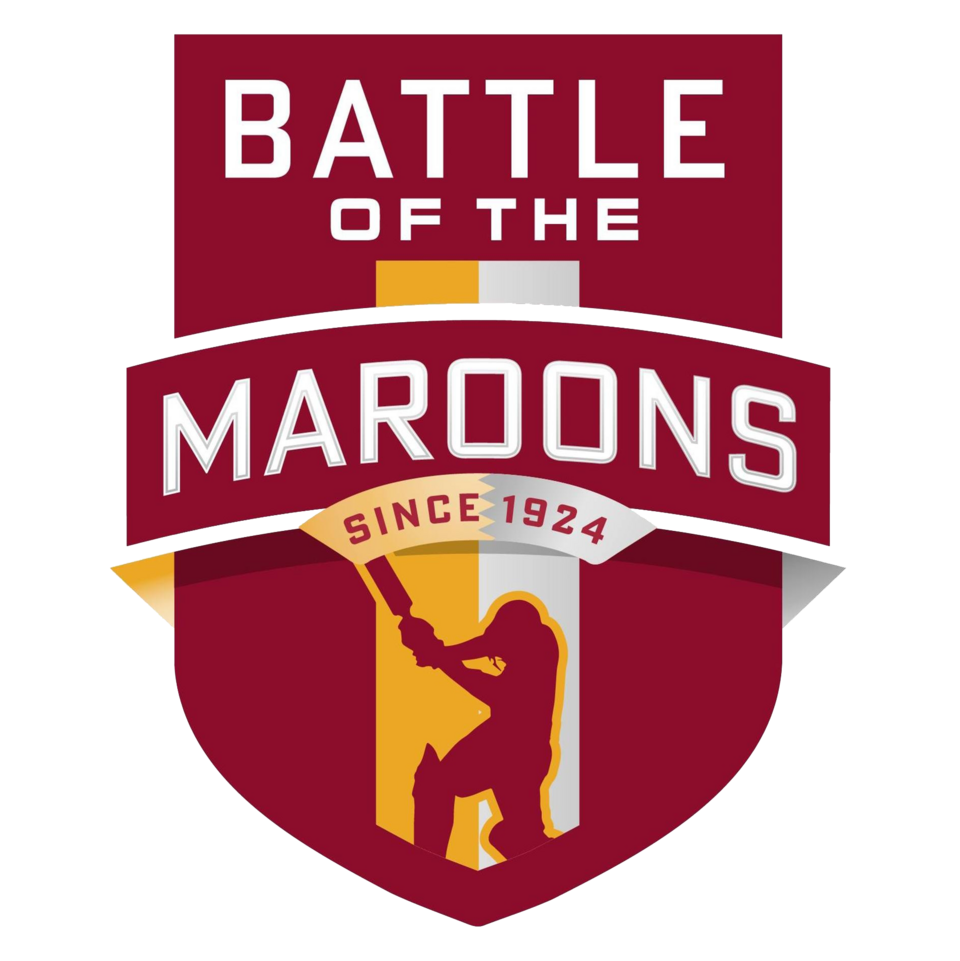

Battle of the Maroons 2026
About the Match
The Battle of the Maroons is the annual premier cricket encounter between Ananda College and Nalanda College in Colombo, Sri Lanka, established in 1924 to foster brotherhood. As one of the country's most celebrated sporting events, it showcases top-tier school cricket, often featuring future national players.
Date
February 27, 28th and March 01st 2026.
One Day Match - March 07th 2026
Venue
At the SSC grounds in Colombo
History
The first Battle of the Maroons was played in 1924, where the Nalanda College playing team was led by B. S. Perera while K. A. P. Rajakaruna led the Anandians, which was subsequently abandoned due to heavy rain. Nalanda won the next match held in 1925, led by B. S. Perera again, while Ananda was led by N. M. Perera. Since then, the match has been held every year, excluding 1943, 1944, and 1945 during the World War II and 1948.
Previously a two-day test format, the match is now played as a three-day format since the 2025 edition, accompanied by a one-day limited overs match. The match is predominantly held at the Singhalese Sports Club grounds. Nalanda are the current holders of the trophy, having won it in 2022 under the captaincy of Dineth Samaraweera. The recent 95th encounter ended in a draw while the 48th one-day encounter was abandoned due to rain.